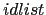

| Gramática de los Árboles de Tutu | Gramática del lenguaje Tutu |
| declarations
declaration ';' declarations |
|
| statements
statement ';' statements |
|
|  | idlist
ID ',' idlist |
En este caso las subrutinas asociadas no devuelven
objetos sino listas de objetos.
Esto da lugar a una compactación del AAA.
Veánse los códigos de statements y idlist:
sub statements() {
my @s;
@s = (statement());
if ($lookahead eq ';') {
match(';');
push @s, statements();
}
return @s;
}
sub idlist() {
my @id;
if ($lookahead eq 'ID') {
@id = ($value); # no es un objeto
match('ID');
if ($lookahead eq ',') {
match(',');
push @id, idlist();
}
}
else {
Error::fatal('Se esperaba un identificador');
@id = ('ERROR');
}
return @id;
}